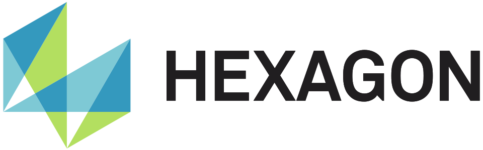

Hexagon AB
Hexagon AB는 스웨덴 스톡홀름에 본사를 둔 다국적 산업 기술 기업이다. 측정 기술과 지리공간 도구·소프트웨어에 주력하며 Nasdaq Stockholm에 상장되어 있다.
최종 업데이트

Hexagon AB는 어떤 브랜드인가
Hexagon AB는 측정 기술과 지리공간 도구·소프트웨어를 중심으로 하는 산업 기술 기업이다. 본사는 스웨덴 스톡홀름에 있고 Nasdaq Stockholm에 상장되어 있다.
2000년 이후 측정 기술에 특히 초점을 맞추었으며, 2000년부터 2022년까지 170건이 넘는 인수를 완료했다. Leica Geosystems와 Infor EAM 등의 모회사이다.
직원은 약 24,000명이며 2025년 순매출은 약 3.7 billion EUR, 총자산은 17.1 billion으로 보고되었다. 2025년 9월에는 Cadence Design Systems가 설계·엔지니어링 사업의 인수를 발표했다.
Hexagon AB는 어떻게 시작되고 성장했나
전신 회사는 1970년 8월 29일 스웨덴 스톡홀름에서 설립되었다. 해산물 수입, 차량 유압, 어린이집 등 다양한 업종에 투자한 복합기업으로 묘사되었다.
1998년 금융인 Melker Schörling이 지배 지분을 사들여 투자 대상을 좁히려 했다. 2000년 Schörling이 Kanthal 전 CEO인 Ola Rollén을 CEO로 임명했고, 회사는 정밀 측정 기술과 소프트웨어 기업을 인수하며 다른 분야는 매각했다.
이후 Brown & Sharpe(2001년 말), Leica Geosystems(2005년), CogniTens Ltd(2007년), Intergraph(2010년 7월)를 인수했다.
Hexagon AB의 브랜드 아이덴티티는 무엇인가
복합기업에서 출발해 측정 기술과 지리공간 소프트웨어로 초점을 좁히고, 인수를 통해 성장한 스웨덴의 산업 기술 기업이다.
Hexagon AB의 대표 제품과 서비스는 무엇인가
측정 및 위치 측정 시스템을 전문으로 하는 기술·소프트웨어 기업이다. 2023년 Reuters에 따르면 제품은 제조 공정의 측정과 품질 검사, 엔지니어링 플랜트 설계, 인프라 계획, 건설, 광업, 농업, 에너지 분야에 쓰인다.
특정 목적별 소프트웨어와 기술을 묶어 '생태계'라 부르는 형태로 개발한다. 2023년 공식 웹사이트는 자율 모빌리티, 건물, 도시와 국가, 방위, 농장 등의 산업을 위한 제품을 판매한다고 밝혔다.
자회사로 Leica Geosystems와 Infor EAM이 있고, 2017년 인수한 MSC Software도 사업에 포함된다.
Hexagon AB는 지금 어떤 상태인가
2022년 말 Ola Rollén이 CEO에서 물러나 이사회 의장이 되었고, Paolo Guglielmini가 CEO가 되었다. 2024년 11월 Guglielmini가 물러나 Norbert Hanke가 임시 CEO를 맡았으며, 이후 Anders Svensson이 CEO로 취임했다.
2025년 9월 Cadence Design Systems는 설계·엔지니어링 사업을 €2.7 billion에 인수하겠다고 발표했다. 직원은 약 24,000명이다.
Hexagon AB 로고는 어떻게 변해왔나
자주 묻는 질문
Hexagon AB는 어느 나라 브랜드인가요?
Hexagon AB는 스웨덴의 기술·전자 브랜드입니다.
Hexagon AB는 언제 설립되었나요?
Hexagon AB는 1975년 설립되었습니다.
Hexagon AB의 브랜드 아이덴티티는 무엇인가요?
복합기업에서 출발해 측정 기술과 지리공간 소프트웨어로 초점을 좁히고, 인수를 통해 성장한 스웨덴의 산업 기술 기업이다.
Hexagon AB의 대표 제품은 무엇인가요?
측정 및 위치 측정 시스템을 전문으로 하는 기술·소프트웨어 기업이다.
Hexagon AB는 현재 어떤 상태인가요?
2022년 말 Ola Rollén이 CEO에서 물러나 이사회 의장이 되었고, Paolo Guglielmini가 CEO가 되었다.
Hexagon AB의 본사는 어디에 있나요?
Hexagon AB의 본사는 스톡홀름에 있습니다(위키데이터 기준).
Hexagon AB의 공식 웹사이트는 어디인가요?
Hexagon AB의 공식 웹사이트는 https://hexagon.com/ 입니다.
출처와 검증
Hexagon AB 관련 참고: 공식 웹사이트 · 위키데이터 Q820970 · 영어 위키백과. 브랜드명은 한글과 원어를 함께 표기하되 데이터에 없는 표기는 만들지 않습니다. 기원 국가·설립연도는 검수된 정의문에서 확인된 값을 우선하고, 없을 때만 공식 웹사이트 URL이 일치하는 위키데이터 개체의 값을 씁니다. 위키데이터 값은 2026-11-15 기준입니다.